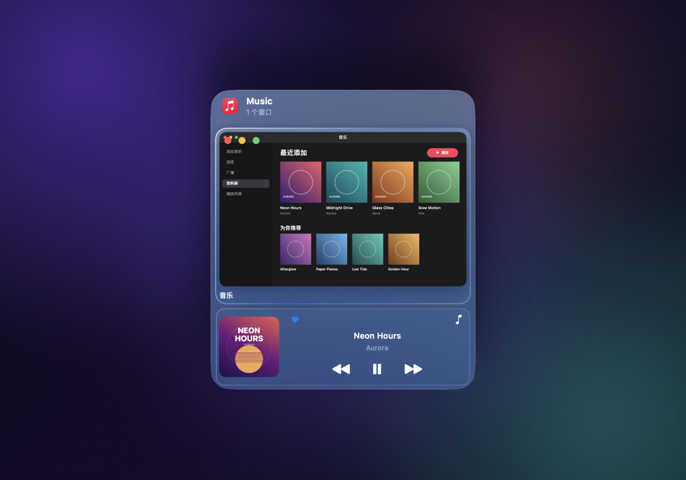

Dock 预览插件 API
插件为 Dock 预览中的应用卡片叠加自定义控件，例如悬停 Apple Music 时显示的播放控制。插件用 JavaScript 编写，运行在内嵌的 JavaScriptCore 中，只返回一棵声明式 UI 树，由 Switchly 用 SwiftUI 绘制——插件拿不到绘图上下文，也没有网络与文件能力。
@switchly/plugin-sdk）、脚手架与 CLI 尚未发布，目前直接手写 JS 即可；内置 Music 插件是参考实现（Resources/Plugins/com.switchly.music-controls/）。设计背景见仓库 dock-preview-plugins-design.md。
内置 Music 插件（com.switchly.music-controls）在 Dock 预览中的实际效果。
概览
Dock 预览 ── PluginOverlayView（渲染 UI 树，处理点击）
│
PluginRuntime（每插件一个 JSVirtualMachine，私有串行队列）
│ 仅注入已授权的能力
MediaBridge（Apple Music，固定 AppleScript）
插件目录
内置：Switchly.app/Contents/Resources/Plugins/<id>/
用户：~/Library/Application Support/Switchly/Plugins/<id>/
├── manifest.json
├── main.js # 单文件 bundle
└── locales/en.json, zh-Hans.json # 可选，供 ctx.t()加载顺序为内置优先；同 id 的用户插件不会覆盖内置插件，防止伪装内置插件骗取已授予的权限。重复 id、manifest 错误、入口越界或超过 2 MB 的插件会被拒绝并在「设置 → 权限 → 插件」显示原因。
manifest.json
{
"id": "com.example.music-controls",
"name": { "en": "Music Controls", "zh-Hans": "音乐控制" },
"version": "1.0.0",
"apiVersion": 1,
"matches": ["com.apple.Music"],
"permissions": ["media.nowPlaying", "media.control"],
"entry": "main.js",
"refreshInterval": 1,
"settings": [
{ "key": "showCover", "default": true,
"title": { "en": "Show album cover", "zh-Hans": "显示专辑封面" } }
]
}| 字段 | 类型 | 必填 | 说明 |
|---|---|---|---|
id | string | 是 | 反向域名，匹配 ^[A-Za-z0-9]+(\.[A-Za-z0-9-]+)+$，全局唯一。 |
name | {语言: 文本} | 是 | 按 en、zh-Hans 等键本地化，设置页展示。 |
version | string | 是 | 插件自身版本。 |
apiVersion | int | 是 | 宿主当前仅支持 1；范围外拒绝加载。 |
matches | [bundleID] | 是 | 目标应用 bundle ID，不能为空；悬停这些应用的 Dock 图标时才会运行。 |
permissions | [string] | 是 | 请求的能力，见权限；未知字符串导致 manifest 解码失败。 |
entry | string | 是 | 入口相对路径；不能为空、以 / 开头或含 ..。 |
refreshInterval | 秒 | 否 | 预览可见时的宿主重绘间隔，下限 1 秒；不可见时零调用。 |
settings | [对象] | 否 | 布尔选项，显示在插件设置卡片，值通过 ctx.settings 传入。字段：key、title（本地化）、default、可选 effect。 |
effect 目前只有 "hideWindowPreviews"：该选项打开时，宿主隐藏窗口缩略图，只显示插件组件。
运行时约定
插件 bundle 必须把入口注册到全局：
globalThis.__switchlyPlugin = {
async render(ctx) { return [ /* { slot, node } */ ]; }, // 返回 null / [] 表示无叠层
async onAction(ctx, id, value) { /* 用户操作 */ }, // 可选
};两个函数可同步、async 或抛异常；返回值经 JSON.stringify 传回宿主。未来 SDK 的 definePlugin() 将产出同样形态。
| 项目 | 行为 |
|---|---|
| 隔离 | 每插件独立 JSVirtualMachine + JSContext，在私有串行队列执行。 |
| 可用全局 | console.log/info/debug/warn/error（写入日志，带 plugin=<id>，单条截断 500 字符并限速）、setTimeout/clearTimeout（每插件最多 32 个，卸载时清除）、原生 Promise。 |
| 不存在 | fetch、XMLHttpRequest、文件系统、子进程。 |
| 超时 | 单次 render/onAction 软超时 200 ms：JSC 无法中断运行中的脚本，迟到结果被丢弃；连续 3 次超时自动停用该插件。 |
| 异常 | 脚本错误或非法输出记入日志，该卡片回落为无叠层。 |
| 生命周期 | Dock 预览出现时挂载；面板关闭或切换应用时卸载并清除定时器；下次渲染重建 JS 环境。授权变化也会重建。 |
ctx 对象
每次调用传入的只读快照：
| 成员 | 说明 | 权限 |
|---|---|---|
ctx.app | { bundleID, pid, name } | 无 |
ctx.window | { windowID, title }。title 已截断到约 40 字符，完整标题不会交给插件；该应用无窗口时 windowID 为 0。 | 无 |
ctx.locale | 首选语言标识，如 "zh-Hans-CN"。 | 无 |
ctx.settings | { [key]: boolean }：manifest 默认值被用户保存的值覆盖，且只含已声明的 key。 | 无 |
ctx.t(key) | 从 locales/<语言>.json 取文案，回退 en，再回退 key 本身。 | 无 |
ctx.invalidate() | 请求宿主尽快重新 render。 | 无 |
ctx.media.nowPlaying() | 返回 Promise<NowPlaying | null>：playing、title、artist、album、position、duration、progress(0–1)、liked、canLike。应用未运行、无当前曲目或尚未授权自动化时为 null，且不会拉起目标应用。 | media.nowPlaying |
ctx.media.togglePlayPause() / next() / previous() | 播放控制，返回 Promise。 | media.control |
ctx.media.setLiked(on) | 喜欢／取消喜欢（Music 的 favorited）。 | media.control |
未授权的 ctx.media 方法根本不存在（而非调用时报错）。专辑封面不经 JS 传递：由宿主按需读取并绘制，仅当 UI 树包含 image 的 {artwork:true} 且插件有 media.nowPlaying 授权。
onAction(ctx, id, value)
点击 button 时 value 为 null；toggle 为 1（开）或 0（关）；slider 为 0–1 的数值。按钮的悬停、按下、焦点状态由宿主本地绘制，不往返 JS；点击按钮不会触发切窗。
声明式 UI
render 返回 null、[] 或 [{ slot, node }, …]。解码即校验：未知类型、未知枚举值、必填字段缺失都会使整次输出被拒绝。尺寸、圆角、间距、材质均取宿主设计令牌，插件不能传颜色值或像素尺寸。
渲染限制
| 限制 | 值 |
|---|---|
| 树深度 | ≤ 8 |
| 节点总数（所有 slot 合计） | ≤ 64 |
| 每个 slot | 最多一个，重复则拒绝 |
可交互控件 id | 整个输出内唯一 |
Slot
| slot | 位置 | 典型用途 |
|---|---|---|
bottomBar | 缩略图底部浮层，高度上限为缩略图的 45% | 紧凑控制条 |
center | 缩略图区域中央（内置 Music 插件使用） | 播放卡片 |
topTrailing | 右上角 | 状态角标 |
titleAccessory | 标题行右侧 | 小图标、计数 |
组件（type）
| 类别 | type | 属性（默认值） |
|---|---|---|
| 布局 | hstack / vstack | children、spacing: xs|s|m、align: leading|center|trailing |
zstack | children | |
spacer | 弹性占位 | |
surface | children、material: glass(默认)|plain — 宿主材质背景 | |
screen | children — 内嵌显示屏样式容器 | |
| 交互 | button | id*、symbol*（SF Symbol 名）、label*（VoiceOver）、size: s|m(默认)|l、variant: plain(默认)|prominent、enabled(true)、selected(false) |
toggle | id*、symbolOn*、symbolOff*、label*、isOn(false) | |
slider | id*、label*、value* 0–1（超界截断）、step ∈ (0,1]；拖动结束才回调 | |
| 展示 | text | value*、style: title|body(默认)|caption、lines: 1–3 |
progress | value* 0–1、style: linear(默认)|circular、rate（每秒增量，预留） | |
image | source*：{symbol} | {pluginAsset}（插件内相对路径，不得越界）| {artwork:true}；size、corner: s|m | |
badge | value*、tone: neutral(默认)|accent|warning | |
marquee | value* — 长文本滚动；减少动态效果时退化为截断 | |
wheel | 点按转盘。children 必须恰好 5 个，依次为上、左、右、下、中；空位用 spacer |
标 * 为必填；id、symbol、label 等不得为空字符串。
权限模型
| 权限字符串 | 作用 | 状态 |
|---|---|---|
media.nowPlaying | 注入 ctx.media.nowPlaying()，允许宿主为 image{artwork} 读取封面 | 可用（仅 Apple Music） |
media.control | 注入播放控制与 setLiked | 可用（仅 Apple Music） |
window.focus | 聚焦窗口 | 已可声明，尚无对应 API |
appleScript:<bundleID> | 调用宿主预置脚本模板（不接受任意脚本） | 已可声明，尚无对应 API（二期） |
- 内置插件：按声明的权限默认启用，用户可关闭。
- 用户插件：默认关闭；用户在「设置 → 权限 → 插件」查看权限清单并确认后才启用。运行时只获得「声明 ∩ 已确认」的权限。
- 更新新增权限：保持“尚未允许”且不注入，直到用户再次确认；授权变化会重建 JS 环境。
- 系统授权：Music 的 Apple Events 自动化权限由宿主申请，首次使用时 macOS 弹窗；未授权前不渲染叠层。插件只能选择命令，从不提供脚本。
- 隐私边界：没有网络、文件、子进程与截图像素；窗口标题仅给截断形式。
最小示例：Music 控制条
放入 ~/Library/Application Support/Switchly/Plugins/com.example.demo/，重新加载后在设置中确认权限并启用。
// manifest.json
{ "id": "com.example.demo", "name": { "en": "Demo" }, "version": "0.1.0",
"apiVersion": 1, "matches": ["com.apple.Music"],
"permissions": ["media.nowPlaying", "media.control"],
"entry": "main.js", "refreshInterval": 1 }
// main.js
globalThis.__switchlyPlugin = {
async render(ctx) {
const np = await ctx.media.nowPlaying();
if (!np) return [];
return [{ slot: "center", node: { type: "surface", material: "glass", children: [
{ type: "vstack", spacing: "xs", align: "center", children: [
{ type: "marquee", value: np.title },
{ type: "text", value: np.artist, style: "caption" },
{ type: "hstack", spacing: "m", children: [
{ type: "button", id: "prev", symbol: "backward.fill", label: ctx.t("Previous") },
{ type: "button", id: "toggle", symbol: np.playing ? "pause.fill" : "play.fill",
label: ctx.t(np.playing ? "Pause" : "Play"), size: "l" },
{ type: "button", id: "next", symbol: "forward.fill", label: ctx.t("Next") },
{ type: "toggle", id: "love", symbolOn: "heart.fill", symbolOff: "heart",
isOn: !!np.liked, label: ctx.t("Love") },
] },
] },
] } }];
},
async onAction(ctx, id, value) {
if (id === "toggle") await ctx.media.togglePlayPause();
else if (id === "next") await ctx.media.next();
else if (id === "prev") await ctx.media.previous();
else if (id === "love") await ctx.media.setLiked(value === 1);
ctx.invalidate();
},
};调试：先在「偏好设置 → 常规」开启「写入本地日志文件」（默认关闭），日志位于 ~/Library/Logs/Switchly/Switchly.log，按 plugin=<id> 过滤。常见失败：Plugin render output rejected（UI 树违反 schema 或限制）、Plugin call timed out（超过 200 ms）、Plugin did not register（未设置 __switchlyPlugin）。
路线图（尚未实现）
- npm 包
@switchly/plugin-sdk（definePlugin、ui构建器、类型定义）、create-switchly-plugin脚手架与@switchly/plugin-cli（build / validate / link）。 ctx.storage（私有 KV）、ctx.app.activate()/ctx.window.focus()、appleScript模板调用、Spotify 支持。- 从 GitHub 固定 commit 安装插件：涉及联网，与“完全本地”承诺冲突，需先修订隐私政策并由用户显式确认，默认关闭。